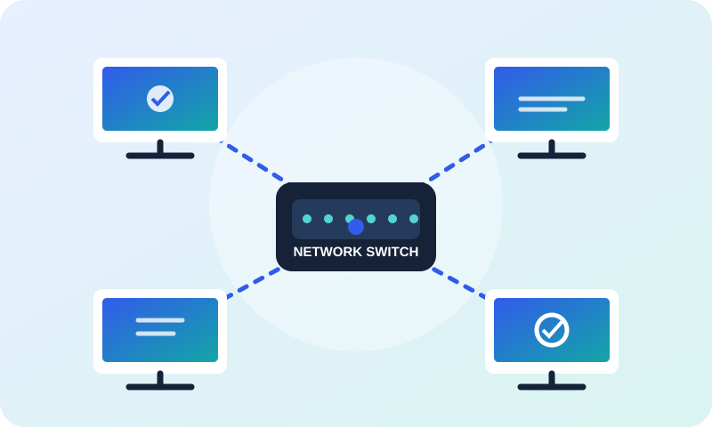
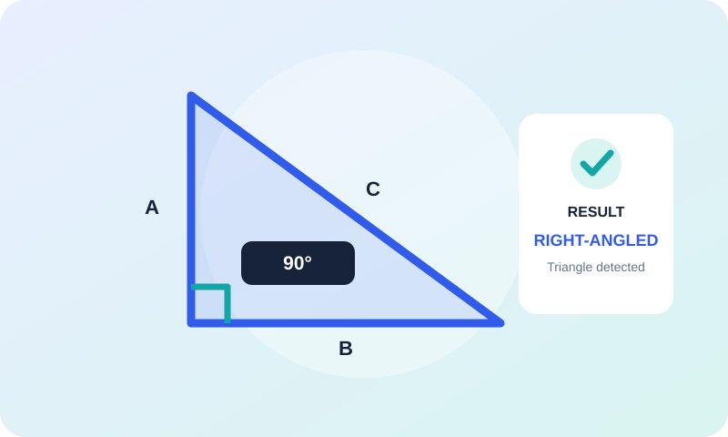

NETWORKING
School Computer Lab Network
Practical experience networking a full school computer laboratory.
View project ↗STUDENT • BUILDER • LIFELONG LEARNER
I'm Okikiola Inioluwa Olanrewaju — a web developer and aspiring cybersecurity professional, learning across disciplines and working towards a future in robotics and invention.
 OI
OI
A LITTLE ABOUT ME
I am first a lover of God, engrossed in His work. I am a technology enthusiast, investing in learning different technical skills that can shape the career I am building. I am also passionate about growth and creating meaningful solutions.
I am currently building a technology brand — The Fose Tech — while pursuing my academic interests in Computer Engineering Technology and Cybersecurity.
I also pioneer an evangelism move as The Worship Evangelist.
SELECTED EXPERIENCE

Practical experience networking a full school computer laboratory.
View project ↗
A program created to determine whether a triangle is right-angled.
View project ↗LET'S CONNECT
Explore my journey, projects and academic planner.
Get in touch ↗